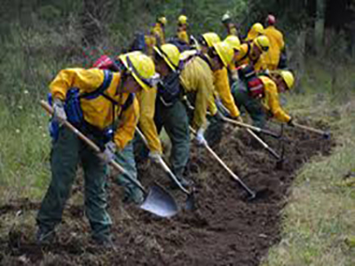
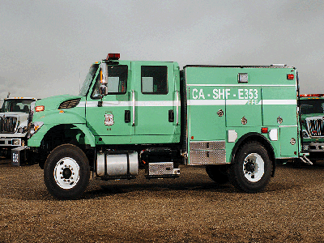
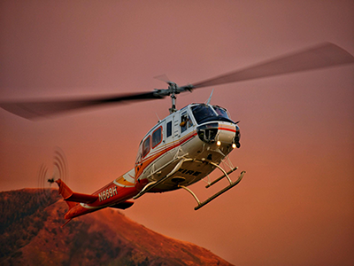

The U.S. Forest Service has more than 10,000 professional firefighters that respond to thousands of wildfires each year on National Forest System land as well as on land under the jurisdiction of other Federal, tribal, state, and local agencies. U.S. Forest Service firefighters on the ground and in the air must be highly trained, skilled, and experienced in order to safely protect lives, property, and valuable natural and cultural resources when they are threatened by wildfires as well as to manage fire to play its natural role in the environment under certain conditions.


